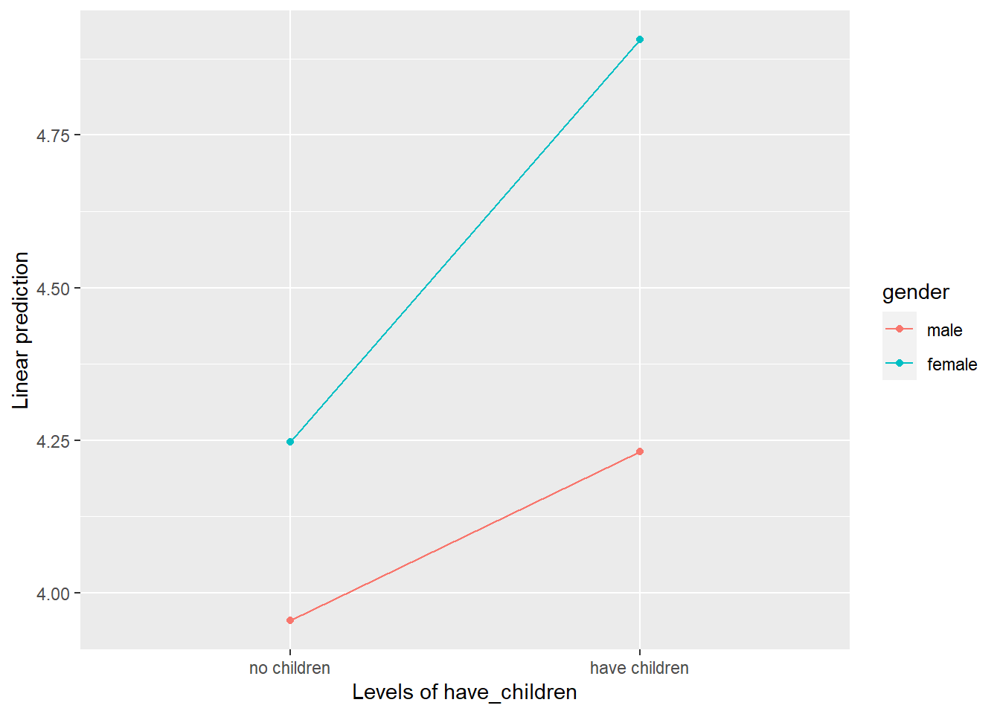

8 Hypothesis Testing
8.1 Overview
The bulk of what we cover in PSYC208 is hypothesis testing.
This section guides you through the steps of conducting the various hypothesis tests. This only serves as an overview for students who are interested to read ahead. I will demonstrate how to conduct the hypothesis tests in class as well as how to interpret the results.
To illustrate the various tests, we will use the same hypothetical dataset, SWB.csv as before. To follow along, please download the dataset: SWB.csv.
8.2 Load Packages and Dataset
# Load packages
library(tidyverse)
library(psych)
# Read in the dataset
data <- read_csv("SWB.csv")8.3 Scientific Notation
In addition to loading the packages and reading in the data file, it might also be helpful to run the code below to turn off scientific notation.
# Set options
options(scipen = 999) # Turn off scientific notation
options(digits = 9) # Display results to 9 decimal placesScientific notation is a way of expressing numbers that are very large or very small. It usually takes the form of m × 10^n for very large numbers and m × 10^-n for very small numbers, where ^ stands for “to the power of”. So, suppose we have the following number: 0.000000000000000477. In scientific notation, this would be represented as4.77 x 10^-16. Alternatively, it might be represented as 4.77e-16. They mean the same thing.
By default, R presents very small or very large numbers in scientific notation. However, this can be difficult to understand for people who don’t use scientific notation in their daily lives. I confess I have difficulty with scientific notation myself so I usually turn the scientific notation off. It’s really a matter of personal choice whether you want to turn it off or not.
And now, let’s begin with the hypothesis tests!
8.4 One-Sample T Test
8.4.1 When to Use A One-Sample T Test
We use a one-sample t test when we want to compare the data from one group to some hypothesised mean. You can think of it as taking a set of observations or scores and then comparing it to some value.
So, suppose we’re interested to know whether on average, in 2019, people were more or less satisfied with their lives than the neutral value of 4. (Why 4? Well, in this data set, the satisfaction with life items were measured on a 7-point scale, where 4 is the neutral point.) To answer this question, we will conduct a one-sample t test.
8.4.2 Conducting and Interpreting the One-Sample T Test
Before jumping into any hypothesis testing, though, it is good practice to first get the descriptive statistics for the variable(s) you’re investigating. At the minimum, you should get the mean and the standard deviation. (Anyway, you need to report means and standard deviations in APA style write-up!) I often also like to look at the minimum and maximum values to make sure the values are not out of ordinary (e.g., a value of -999 might throw up some red flags if, say, the likert scale only comprises values from 1 to 7).
# Calculate the average satisfaction with life score in 2019 for each participant
data <- data %>%
mutate(swls2019_avg = rowMeans(across(c(swls2019_1:swls2019_5))))
# Get the descriptives
describe(data$swls2019_avg)## vars n mean sd median trimmed mad min max range skew kurtosis se
## X1 1 343 4.35 0.77 4.4 4.33 0.89 2 6 4 0.1 -0.48 0.04# Conduct the one-sample t test to compare the satisfaction with life score in 2019 against the neutral point of 4
# x = data$swls2019_avg tells R the variable we're interested in
# alternative = c("two-sided") tells R we want to conduct a two-tailed test (in my class, we ALWAYS conduct a two-tailed test)
# mu = 4 tells R the value we're comparing to
# paired = FALSE tells R that each observation comes from different individuals (i.e., they are not "paired")
# conf.level = 0.95 tells R we want the 95% confidence level. If we use alpha = .05, then the confidence level is 0.95.
t.test(x = data$swls2019_avg, alternative = c("two.sided"), mu = 4, paired = FALSE, conf.level = 0.95)##
## One Sample t-test
##
## data: data$swls2019_avg
## t = 8.530937, df = 342, p-value = 0.000000000000000477477
## alternative hypothesis: true mean is not equal to 4
## 95 percent confidence interval:
## 4.27188244 4.43482310
## sample estimates:
## mean of x
## 4.35335277The results tell you that the average of swls2019_avg is 4.35 (but notice it doesn’t tell you any other descriptive statistics like standard deviation or maximum, so it’s still important to get the descriptives in other ways).
When we compare 4.35 to the neutral point of 4, the resulting t value is 8.53. With degrees of freedom 342, the p value is very small, at 0.000000000000000477477. Because p value is smaller than the alpha level of .05, the result is statistically significant. Because 4.35 is statistically significantly greater than 4, we would conclude that there is sufficient evidence that the satisfaction with life scores in 2019 is greater than the neutral value of 4.
In addition, the 95% confidence interval is [4.27, 4.43], which is interpreted as follows: We are 95% confident that the true 2019 satisfaction with life score is between 4.27 and 4.43.
You can code the same thing using t.test() in a slightly different way, known as the formula interface:
t.test(swls2019_avg ~ 1, data = data, alternative = c("two.sided"), mu = 4, paired = FALSE, conf.level = 0.95)You’ll get the same result!
8.4.3 Effect Size: Cohen’s d
In addition to hypothesis testing, we also need to look at (standardised) effect size. Effect sizes tell you how large the effect (or the difference) is. The effect size we usually calculate for t tests is the Cohen’s d, where d = 0.2 is a small effect size, d = 0.5 is a medium effect size, and d = 0.8 is a large effect size.
We can calculate Cohen’s d using the cohens_d() function from the effectsize package.
# Load package
library(effectsize)
# Cohen's d, with mu = 4
cohens_d(swls2019_avg ~ 1, data = data, mu = 4)## Cohen's d | 95% CI
## ------------------------
## 0.46 | [0.35, 0.57]
##
## - Deviation from a difference of 4.Given the Cohen’s d is 0.46, we can consider this a small to medium effect size.
8.6 Independent Groups T Test
8.6.1 When to Use An Independent Groups T Test
We use an independent groups t test when we want to compare two sets of data to see if they are different from each other. Importantly, the two sets of data are independent (i.e., they are NOT paired).
Suppose we want to know whether men and women differ in satisfaction with life in 2019. In other words, we’re comparing the satisfaction with life scores for the group of men with that for the group of women. In this case, because the men and women are not paired with each other in any way, we consider the two sets of satisfaction with life scores as independent.
Therefore, to answer our research question, we will conduct an independent groups t test.
8.6.2 Conducting and Interpreting the Independent Groups T Test
As usual, before conducting the independent groups t test, we will get the descriptive statistics for each group.
# First, we need to convert gender into a factor
data$gender <- factor(data$gender, levels = c(0, 1), labels = c("male", "female"))
# Next, we get the descriptive statistics for each group, male and female
describeBy(data$swls2019_avg, group = data$gender)##
## Descriptive statistics by group
## group: male
## vars n mean sd median trimmed mad min max range skew kurtosis se
## X1 1 168 4.08 0.61 4.2 4.06 0.59 3 5.8 2.8 0.26 -0.46 0.05
## ------------------------------------------------------------
## group: female
## vars n mean sd median trimmed mad min max range skew kurtosis se
## X1 1 175 4.62 0.81 4.6 4.65 0.89 2 6 4 -0.35 -0.25 0.06# Then, we conduct the independent groups t test
# Notice that this t.test code takes the form of the formula interface: DV ~ IV
# "two-sided" tells R we're conducting a two-tailed test
# mu = 0 means we're comparing the difference between males and females against the value of 0
# var.equal = TRUE means that we're assuming homogeneity of variance is met (if homogeneity of variance is violated, use var.equal = FALSE and R will conduct Welch corrections)
# conf.level = 0.95 means we want the 95% confidence level
t.test(data$swls2019_avg ~ data$gender, alternative = c("two.sided"), mu = 0, var.equal = TRUE, conf.level = 0.95)##
## Two Sample t-test
##
## data: data$swls2019_avg by data$gender
## t = -6.898557, df = 341, p-value = 0.0000000000256373
## alternative hypothesis: true difference in means between group male and group female is not equal to 0
## 95 percent confidence interval:
## -0.689132523 -0.383343668
## sample estimates:
## mean in group male mean in group female
## 4.0797619 4.6160000The results indicate that the average satisfaction with life score for those who identify as male is 4.08 and 4.62 for those who identify as female. When we compare the difference between the two genders against 0, the resulting t value is -6.90. With degrees of freedom 341, the p value is very small, at 0.0000000000256373. Because p value is smaller than the alpha level of .05, the result is statistically significant. Because 4.62 is statistically significantly greater than 4.08, we would conclude that there is sufficient evidence that the satisfaction with life scores in 2019 is greater for females than for males.
The 95% confidence interval is [-0.69, -0.38] which is interpreted as follows: We are 95% confident that the true difference in 2019 satisfaction with life score between males and females is between -0.69 and -0.38.
Note. In calculating the t statistic, R took male - female (since 0 = male and 1 = female, and R takes the group with the smaller number and subtracts the group with the larger number) . Because males have a smaller 2019 SWLS than females, the t statistic is negative. However, if R had taken female - male, the t statistic would be positive. Whether it is positive or negative doesn’t matter so long as you know which group has a higher mean and therefore can interpret correctly the direction of the effect.
8.6.3 Effect Size: Cohen’s d
Finally, we need to get the effect size, Cohen’s d, for the independent groups t test using the cohens_d() function from the effectsize package.
# Cohen's d, with mu = 0 (which is the default, so no need to state)
cohens_d(swls2019_avg ~ gender, data = data)## Cohen's d | 95% CI
## --------------------------
## -0.75 | [-0.96, -0.53]
##
## - Estimated using pooled SD.Given the Cohen’s d is -0.75, we can consider this a medium-large effect size.
Note. There is a negative sign here because R took male - female. If R took female - male, Cohen’s d will be positive.
8.7 One-Way Between-Subjects ANOVA
The independent groups t test is used when you want to compare the scores between two independent groups. But what if you have more than two independent groups? You would use the one-way between-subjects ANOVA.
So, suppose we want to know whether people with different marital status report differing levels of satisfaction with life scores. In other words, we might want to find out whether there is at least one mean difference between: a) married vs divorced, b) married vs widowed, c) divorced vs widowed.
# Convert marital status into factor
data$marital_status <- factor(data$marital_status, levels = c(1, 2, 3), labels = c("married", "divorced", "widowed"))
# Descriptive statistics
describeBy(data$swls2019_avg, group = data$marital_status)##
## Descriptive statistics by group
## group: married
## vars n mean sd median trimmed mad min max range skew kurtosis se
## X1 1 118 4.58 0.85 4.5 4.6 1.19 3 6 3 -0.01 -1.08 0.08
## ------------------------------------------------------------
## group: divorced
## vars n mean sd median trimmed mad min max range skew kurtosis se
## X1 1 114 4.16 0.72 4.3 4.16 0.74 2 5.6 3.6 -0.17 -0.1 0.07
## ------------------------------------------------------------
## group: widowed
## vars n mean sd median trimmed mad min max range skew kurtosis se
## X1 1 111 4.3 0.65 4.4 4.27 0.59 3.2 6 2.8 0.18 -0.74 0.06# Run the ANOVA
# ANOVA is strange in that to view the results, you need to save it as an object first.
results <- aov(swls2019_avg ~ marital_status, data = data)
# Look at the summary results
summary(results)## Df Sum Sq Mean Sq F value Pr(>F)
## marital_status 2 10.7832 5.39159 9.62428 0.000085953 ***
## Residuals 340 190.4705 0.56021
## ---
## Signif. codes: 0 '***' 0.001 '**' 0.01 '*' 0.05 '.' 0.1 ' ' 1There are two other ways to run the ANOVA. The results will be exactly the same.
# Alternative 1
results <- aov(data$swls2019_avg ~ data$marital_status)
#Alternative 2
results <- aov(data = data, swls2019_avg ~ marital_status)Because the ANOVA results are statistically significant, we might want to follow up with pairwise comparisons (Tukey’s HSD). To run this, we need the DescTools package. (Remember to install the package Before continuing.)
# Load package
library(DescTools)
# Perform a posthoc test on the results using Tukey's HSD. Oh, and give me the 95% CI.
PostHocTest(results, method = "hsd", conf.level = .95)##
## Posthoc multiple comparisons of means : Tukey HSD
## 95% family-wise confidence level
##
## $marital_status
## diff lwr.ci upr.ci pval
## divorced-married -0.423342254 -0.6547275679 -0.1919569400 0.000064 ***
## widowed-married -0.280241258 -0.5132115136 -0.0472710028 0.0136 *
## widowed-divorced 0.143100996 -0.0918420376 0.3780440291 0.3247
##
## ---
## Signif. codes: 0 '***' 0.001 '**' 0.01 '*' 0.05 '.' 0.1 ' ' 1If you want other posthoc tests, you can change the method portion. Type ?PostHocTest into the console to find out more about the different post hoc tests available to you.
8.8 Two-Way Between-Subjects ANOVA
Suppose you want to know whether the difference in satisfaction with life scores between male and female depends on whether they have children. To find out, you will need to conduct a two-way between-subjects ANOVA.
You’ll need the car package to run the ANOVA.
# Load package
library(car)
# Change have_children into a factor
data$have_children <- factor(data$have_children, levels = c(0, 1), labels = c("no children", "have children"))
# Change contrasts settings when estimating Type-3 sum of squares
options(contrasts = c('contr.sum', 'contr.poly'))
# Set up the model being tested and store the model to [mod1]
# The model has the following format: DV ~ IV1 + IV2 + IV1*IV2
mod1 <- lm(swls2019_avg ~ gender + have_children + gender*have_children, data = data)
# Conduct Two-Way ANOVA and get the ANOVA summary table
# type = "3" refers to Type 3 sum of squares. For this class, we will use Type 3 sum of squares.
Anova(mod1, type = "3") ## Anova Table (Type III tests)
##
## Response: swls2019_avg
## Sum Sq Df F value Pr(>F)
## (Intercept) 6366.863 1 13955.51399 < 0.000000000000000222 ***
## gender 19.801 1 43.40250 0.00000000017028 ***
## have_children 18.578 1 40.72079 0.00000000057671 ***
## gender:have_children 3.093 1 6.77873 0.0096307 **
## Residuals 154.660 339
## ---
## Signif. codes: 0 '***' 0.001 '**' 0.01 '*' 0.05 '.' 0.1 ' ' 1Because the interaction is statistically significant, we will conduct the simple effects analysis. This is essentially like conducting independent groups t tests (with some corrections). Since we want to find out whether the difference between male and female’s satisfaction with life scores depends on having children, the two tests we will conduct would be: 1) difference in the satisfaction with life scores of males and females who have children; 2) difference in the satisfaction with life scores of males and females who do not have children.
To do the simple effects analyses, we need the emmeans package.
# Load package
library(emmeans)
# first, let's look at a plot
# Separate Lines: have_children, X axis: gender
emmip(mod1, have_children ~ gender)
# Next, we conduct the simple effects investigating 1) the effect of gender (difference between males and females) for those who have children, and 2) the effect of gender for those who do not have children.
emmeans(mod1, pairwise ~ gender | have_children) # comparing the pair of conditions in gender for each level of have_children## $emmeans
## have_children = no children:
## gender emmean SE df lower.CL upper.CL
## male 3.95 0.0704 339 3.82 4.09
## female 4.25 0.0770 339 4.10 4.40
##
## have_children = have children:
## gender emmean SE df lower.CL upper.CL
## male 4.23 0.0775 339 4.08 4.38
## female 4.91 0.0682 339 4.77 5.04
##
## Confidence level used: 0.95
##
## $contrasts
## have_children = no children:
## contrast estimate SE df t.ratio p.value
## male - female -0.292 0.104 339 -2.803 0.0054
##
## have_children = have children:
## contrast estimate SE df t.ratio p.value
## male - female -0.675 0.103 339 -6.534 <.0001Suppose, though, you were interested in looking at the effect of having children by gender. In other words, you’re interested in looking at the difference 1) between men with and men without children, and 2) between women with and women without children. In this case, you will swap the variables around.
# First, let's look at a plot
# Separate Lines: gender, X axis: have_children
emmip(mod1, gender ~ have_children)
# Next, we conduct the simple effects investigating 1) the effect of having children (difference between having children and not having children) for males, and 2) of having children (difference between having children and not having children) for females.
emmeans(mod1, pairwise ~ have_children | gender) # comparing the pair of conditions in have_children for each level of gender## $emmeans
## gender = male:
## have_children emmean SE df lower.CL upper.CL
## no children 3.95 0.0704 339 3.82 4.09
## have children 4.23 0.0775 339 4.08 4.38
##
## gender = female:
## have_children emmean SE df lower.CL upper.CL
## no children 4.25 0.0770 339 4.10 4.40
## have children 4.91 0.0682 339 4.77 5.04
##
## Confidence level used: 0.95
##
## $contrasts
## gender = male:
## contrast estimate SE df t.ratio p.value
## no children - have children -0.277 0.105 339 -2.648 0.0085
##
## gender = female:
## contrast estimate SE df t.ratio p.value
## no children - have children -0.659 0.103 339 -6.410 <.00018.9 Correlation
Suppose you want to find out whether people who have higher satisfaction with life scores in 2019 also have higher satisfaction with life scores in 2021. Here is where you will conduct a correlation.
data <- data %>%
mutate(swls2021_avg = rowMeans(across(c(swls2021_1:swls2021_5))))
cor.test(data$swls2019_avg, data$swls2021_avg)##
## Pearson's product-moment correlation
##
## data: data$swls2019_avg and data$swls2021_avg
## t = 38.39589, df = 341, p-value < 0.000000000000000222
## alternative hypothesis: true correlation is not equal to 0
## 95 percent confidence interval:
## 0.879200201 0.919351528
## sample estimates:
## cor
## 0.901191727Alternatively, you can do the correlation test this way:
# Alternative 1
cor.test(~ swls2019_avg + swls2021_avg,
data = data)
# Alternative 2
data %>%
cor.test(formula = ~ swls2019_avg + swls2021_avg, .)All ways would give you the same result.
8.10 Regression
Suppose you want to predict swls2021_avg from swls2019_avg. Here, we might want to conduct linear regression.
The simplest form of linear regression is called simple linear regression. It only has two variables: one predictor and one outcome.
# Conduct regression
# the model takes the form of Y ~ X (where Y = outcome, X = predictor)
data %>%
lm(swls2021_avg ~ swls2019_avg, data = .) %>%
summary(.)##
## Call:
## lm(formula = swls2021_avg ~ swls2019_avg, data = .)
##
## Residuals:
## Min 1Q Median 3Q Max
## -1.056645 -0.248328 -0.006664 0.193336 0.801654
##
## Coefficients:
## Estimate Std. Error t value Pr(>|t|)
## (Intercept) 0.4065882 0.0911404 4.46112 0.000011087 ***
## swls2019_avg 0.7916825 0.0206189 38.39589 < 0.000000000000000222 ***
## ---
## Signif. codes: 0 '***' 0.001 '**' 0.01 '*' 0.05 '.' 0.1 ' ' 1
##
## Residual standard error: 0.292508 on 341 degrees of freedom
## Multiple R-squared: 0.812147, Adjusted R-squared: 0.811596
## F-statistic: 1474.24 on 1 and 341 DF, p-value: < 0.000000000000000222Unfortunately, the summary doesn’t give us the confidence interval. To get that, we need to specify that we want the confidence interval with the confint() function.
# To get the 95% confidence interval
data %>%
lm(swls2021_avg ~ swls2019_avg, data = .) %>%
confint(.)## 2.5 % 97.5 %
## (Intercept) 0.227320000 0.585856416
## swls2019_avg 0.751126141 0.832238772